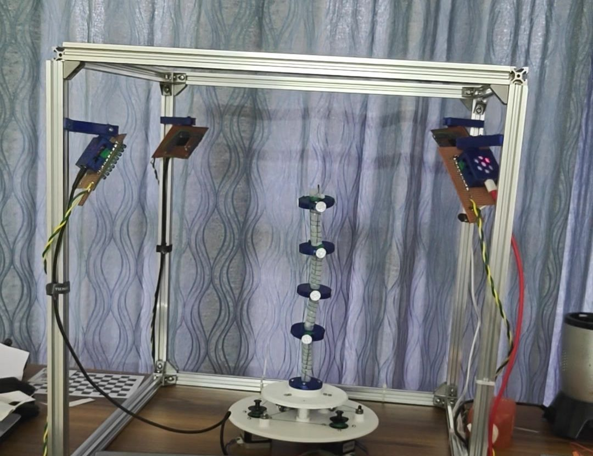
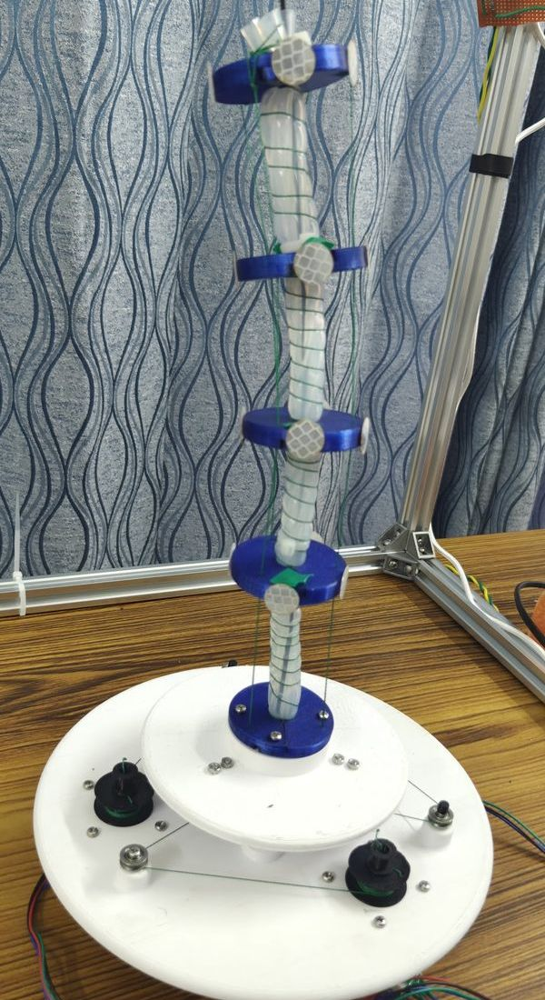

A soft robot has no joints to read
A soft continuum robot bends along its whole length, so there are no joint angles to measure. To train a control model for it, its shape has to be measured from outside, accurately and at a high frame rate.
The robot is about 300 mm tall: four PLA disks spaced roughly 70 mm apart on a flexible backbone, each carrying retroreflective stickers around its rim. Three stepper motors bend it by winding tendons onto spools in the base, controlled from an ESP32 with DRV8825 drivers. The rig around it is a 500 mm aluminium cube with a camera on each corner at a different height, each fitted with a 24-LED infrared ring and an IR-pass filter so the markers light up and the background stays dark.

- Frame. 500 mm cube of aluminium extrusion
- Camera on a printed mount, one per corner at a different height
- Infrared LED ring, lit, around the lens
- Retroreflective markers on each disk
- Base with tendon spools on the stepper motors
- ChArUco board used for calibration

- Marker sticker
- PLA disk, ~70 mm apart
- Flexible backbone
- Tendon
- Spool on a stepper motor
Geometry